| Symbol |
Description |
AT42QT1010-M | Description: Single-key Touch Sensor, UDFN-8
Keys: Touch QTouch Sensor Key
Datasheet: http://ww1.microchip.com/downloads/en/DeviceDoc/40001946A.pdf |
AT42QT1010-TSHR | Description: Single-key Touch Sensor, SOT-23-6
Keys: Touch QTouch Sensor Key
Datasheet: http://ww1.microchip.com/downloads/en/DeviceDoc/40001946A.pdf |
AT42QT1011-M | Description: Single-key Touch Sensor, UDFN-8
Keys: Touch QTouch Sensor Key
Datasheet: http://ww1.microchip.com/downloads/en/DeviceDoc/40001947A.pdf |
AT42QT1011-TSHR | Description: Single-key Touch Sensor, SOT-23-6
Keys: Touch QTouch Sensor Key
Datasheet: http://ww1.microchip.com/downloads/en/DeviceDoc/40001947A.pdf |
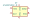
AT42QT1012-M | Description: Single-Key Touch Sensor IC, UDFN-8
Keys: Touch QTouch Sensor Key
Datasheet: http://ww1.microchip.com/downloads/en/DeviceDoc/40001948A.pdf |
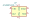
AT42QT1012-T | Description: Single-Key Touch Sensor IC, SOT-23-6
Keys: Touch QTouch Sensor Key
Datasheet: http://ww1.microchip.com/downloads/en/DeviceDoc/40001948A.pdf |
AT42QT1040-M | Description: Four-key Touch Sensor IC, VQFN-20
Keys: Touch QTouch Sensor Key
Datasheet: http://ww1.microchip.com/downloads/en/DeviceDoc/Atmel-9524-AT42-QTouch-BSW-AT42QT1040_Datasheet.pdf |
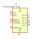
AT42QT1050-M | Description: Five-Key Touch Sensor, VQFN-20
Keys: Touch QTouch Sensor Key
Datasheet: http://ww1.microchip.com/downloads/en/DeviceDoc/Atmel-9707-AT42-QTouch-BSW-AT42QT1050_Datasheet.pdf |
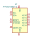
AT42QT1050-U | Description: Five-Key Touch Sensor, WLCSP-12
Keys: Touch QTouch Sensor Key
Datasheet: http://ww1.microchip.com/downloads/en/DeviceDoc/Atmel-9707-AT42-QTouch-BSW-AT42QT1050_Datasheet.pdf |
AT42QT1060-M | Description: Six-Key Touch Sensor IC, VQFN-28
Keys: Touch QTouch Sensor Key
Datasheet: http://ww1.microchip.com/downloads/en/DeviceDoc/Atmel-9505-AT42-QTouch-BSW-AT42QT1060_Datasheet.pdf |
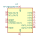
AT42QT1070-M | Description: Seven-key Touch Sensor IC, VQFN-20
Keys: Touch QTouch Sensor Key
Datasheet: http://ww1.microchip.com/downloads/en/DeviceDoc/Atmel-9596-AT42-QTouch-BSW-AT42QT1070_Datasheet.pdf |
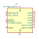
AT42QT1070-S | Description: Seven-key Touch Sensor IC, SOIC-14
Keys: Touch QTouch Sensor Key
Datasheet: http://ww1.microchip.com/downloads/en/DeviceDoc/Atmel-9596-AT42-QTouch-BSW-AT42QT1070_Datasheet.pdf |
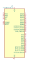
AT42QT1110-M | Description: 11-Key Touch Sensor IC, VQFN-32
Keys: Touch QTouch Sensor Key
Datasheet: http://ww1.microchip.com/downloads/en/DeviceDoc/Atmel-9520-AT42-QTouch-BSW-AT42QT1110_Datasheet.pdf |
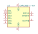
CAP1206-x-AIA | Description: 6-Channel Capacitive Touch Sensor, DFN-10
Keys: 6 Channel Capacitive Touch Sensor
Datasheet: http://ww1.microchip.com/downloads/en/DeviceDoc/00001567B.pdf |
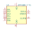
CAP1206-x-SL | Description: 6-Channel Capacitive Touch Sensor, SOIC-14
Keys: 6 Channel Capacitive Touch Sensor
Datasheet: http://ww1.microchip.com/downloads/en/DeviceDoc/00001567B.pdf |
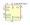
CY8CMBR3002 | Description: CapSense Controller, 2 Sensors, SOIC-8
Keys: Touch Sensor 2ch
Datasheet: http://www.cypress.com/?docID=49119 |
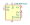
CY8CMBR3102 | Description: CapSense Controller, 2 Sensors, SOIC-8
Keys: Touch Sensor 2ch
Datasheet: http://www.cypress.com/?docID=49119 |
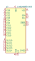
CY8CMBR3106S | Description: CapSense Controller, 16 Sensors w/ Slider, QFN-24+EP
Keys: Touch Sensor 16ch Slider
Datasheet: http://www.cypress.com/?docID=49119 |
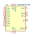
CY8CMBR3108 | Description: CapSense Controller, 8 Sensors, QFN-16+EP
Keys: Touch Sensor 8ch
Datasheet: http://www.cypress.com/?docID=49119 |
CY8CMBR3110 | Description: CapSense Controller, 10 Sensors, SOIC-16
Keys: Touch Sensor 10ch
Datasheet: http://www.cypress.com/?docID=49119 |
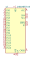
CY8CMBR3116 | Description: CapSense Controller, 16 Sensors, QFN-24+EP
Keys: Touch Sensor 16ch
Datasheet: http://www.cypress.com/?docID=49119 |
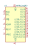
MPR121QR2 | Description: 12ch Touch Sensor controller, UQFN-20
Keys: Touch Sensor 12ch
Datasheet: https://resurgentsemi.com/wp-content/uploads/2018/09/MPR121_rev5-Resurgent.pdf?d453f8&d453f8 |
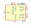
PCA8886 | Description: Dual capacitive touch/proximity switch with auto-calibration, TSSOP-16
Keys: NXP capacitive touch sensor auto-calibration
Datasheet: http://www.nxp.com/docs/en/data-sheet/PCA8886.pdf |
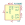
PCF8883 | Description: Capacitive touch/proximity switch with auto-calibration, SOIC-8/WLCSP-8
Keys: NXP capacitive touch sensor auto-calibration
Datasheet: http://www.nxp.com/docs/en/data-sheet/PCF8883.pdf |